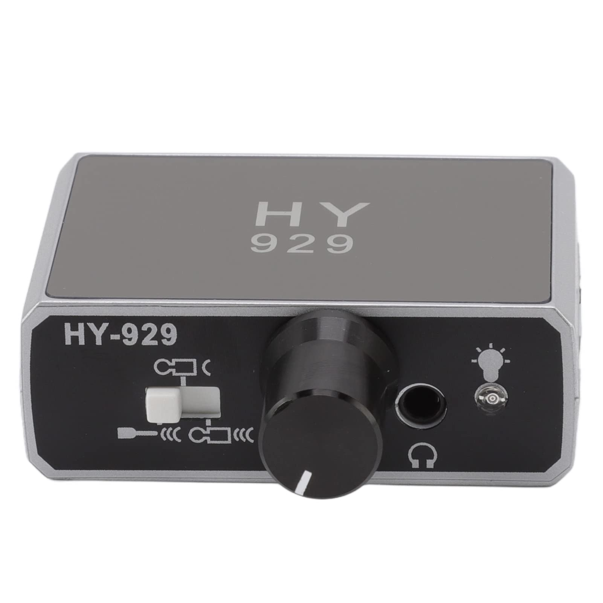

Kit PRO · HY-929

Escucha y apoya la identificación de posibles fugas.
S/369.90
Consultar condiciones de compra
- Acceso gratuito START.
- 01 minigeófono HY-929 + 01 audífono auxiliar Vortex Tech de regalo.
- Guía gráfica profesional y video tutorial grabado.
- 01 sesión grupal online grabada al mes por 6 meses.
Equipo de escucha para complementar el diagnóstico. La indicación requiere evaluación técnica.
CONSULTAR KIT PRO